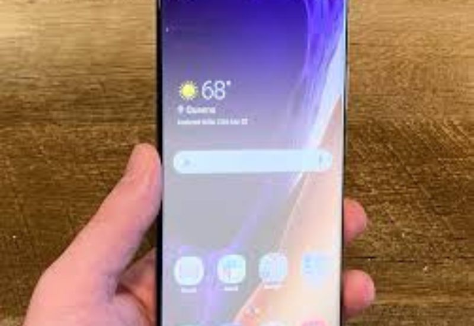
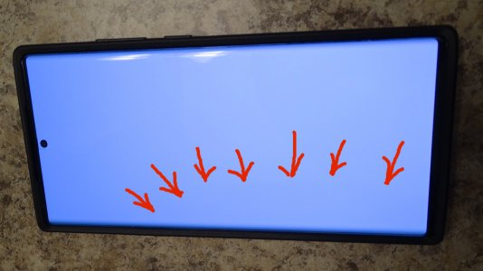
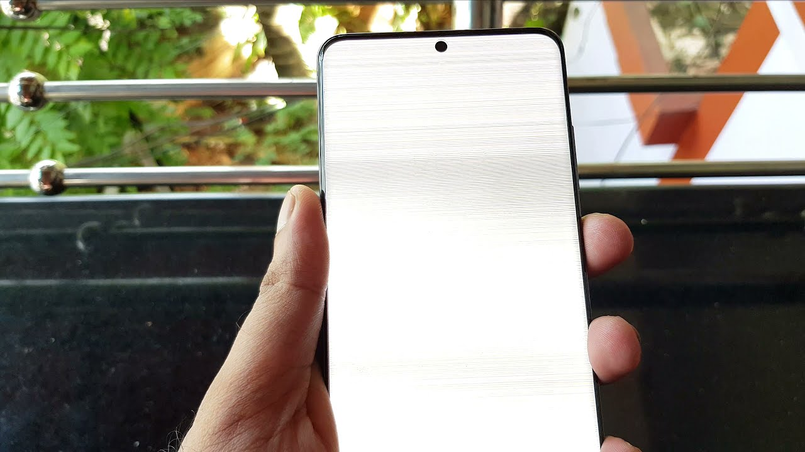

Samsung Note 20 Ultra
trắng màn hình: Nguyên nhân và cách khắc phục
Màn hình điện thoại là bộ phận quan trọng, ảnh hưởng trực tiếp đến trải nghiệm người dùng. Khi gặp phải tình trạng Samsung Note 20 Ultra trắng màn hình, người dùng thường cảm thấy lo lắng và hoang mang. Thuận Phát Mobile sẽ giúp bạn hiểu rõ hơn về nguyên nhân gây ra lỗi này và cung cấp các giải pháp khắc phục hiệu quả thông qua bài viết sau.
Nguyên nhân gây ra lỗi màn hình trắng trên Samsung Note 20 Ultra

Lỗi màn hình trắng trên Samsung Note 20 Ultra có thể do nhiều nguyên nhân khác nhau, bao gồm cả phần cứng và phần mềm. Dưới đây là một số nguyên nhân phổ biến:
Lỗi Phần Cứng
-
Hư hỏng kết nối: Cáp màn hình Samsung Note 20 Ultra bị lỗi hoặc hỏng hóc, dẫn đến màn hình không hiển thị hình ảnh đúng cách.
-
Lỗi màn hình: Màn hình LCD hoặc OLED bị hỏng hoặc lỗi cũng có thể gây ra màn hình trắng.
-
Rơi vỡ hoặc va đập: Sự va đập mạnh hoặc bị rơi có thể gây tổn thương cho màn hình hoặc các linh kiện liên quan, dẫn đến lỗi màn hình trắng.
Lỗi Phần Mềm
-
Lỗi hệ điều hành: Các lỗi trong hệ điều hành Android hoặc phần mềm có thể khiến màn hình hiển thị không chính xác hoặc bị trắng.
-
Ứng dụng gây xung đột: Một ứng dụng hoặc phần mềm không tương thích có thể gây ra sự cố với màn hình, dẫn đến lỗi màn hình trắng.
-
Cập nhật phần mềm không thành công: Các cập nhật phần mềm bị lỗi hoặc không hoàn tất có thể gây ra vấn đề với hiển thị màn hình.
Sự Cố Nguồn Điện
-
Pin hỏng hoặc yếu: Nếu pin điện thoại gặp sự cố, màn hình có thể không hoạt động đúng cách, dẫn đến tình trạng màn hình trắng.
-
Sạc không đúng cách: Sạc không đúng cách cũng có thể dẫn đến màn hình Samsung Note 20 Ultra bị ảnh hưởng nghiêm trọng.
Cách khắc phục lỗi Samsung Note 20 Ultra trắng màn hình

Để khắc phục lỗi màn hình trắng trên Samsung Note 20 Ultra, bạn có thể thử các phương pháp sau:
-
Khởi động lại điện thoại là bước đơn giản đầu tiên nên thử khi gặp phải lỗi màn hình trắng. Đôi khi, hệ thống gặp sự cố tạm thời và việc khởi động lại có thể giải quyết vấn đề.
-
Kiểm tra kết nối cáp sạc cũng là một bước quan trọng. Nếu điện thoại đang sạc và màn hình trắng, hãy thử rút sạc và kiểm tra lại kết nối. Có thể xảy ra trường hợp lỗi liên quan đến quá trình sạc.
-
Sử dụng chế độ Safe Mode giúp loại trừ khả năng ứng dụng gây ra lỗi. Nếu màn hình hoạt động bình thường trong chế độ Safe Mode, có thể có ứng dụng nào đó đang xung đột với hệ thống.
-
Cập nhật phần mềm lên phiên bản mới nhất có thể khắc phục các lỗi liên quan đến hệ điều hành. Nhà sản xuất thường phát hành các bản cập nhật để sửa lỗi và cải thiện hiệu suất.
-
Mang điện thoại đi sửa chữa là giải pháp cuối cùng nếu các cách khắc phục trên không thành công. Tìm một trung tâm sửa chữa điện thoại uy tín để kiểm tra và sửa chữa lỗi phần cứng.
Cách phòng ngừa lỗi màn hình trắng trên Samsung Note 20 Ultra

Để phòng ngừa lỗi màn hình trắng trên Samsung Note 20 Ultra, bạn có thể thực hiện các biện pháp sau:
-
Sử dụng ốp lưng, kính cường lực giúp bảo vệ điện thoại khỏi va đập, giảm nguy cơ hư hỏng màn hình.
-
Tránh va đập mạnh là biện pháp quan trọng để bảo vệ điện thoại. Nên cẩn thận khi sử dụng và đặt điện thoại ở nơi an toàn.
Địa chỉ thay màn Samsung Note 20 Ultra uy tín ở đâu?
Khi thay màn hình Samsung Note 20 Ultra, việc chọn trung tâm sửa chữa uy tín là rất quan trọng. Để đảm bảo chất lượng dịch vụ và linh kiện chính hãng, hãy nghiên cứu kỹ lưỡng trước khi quyết định. Lựa chọn trung tâm có kinh nghiệm và uy tín, và cân nhắc các yếu tố sau:
-
Kinh nghiệm: Trung tâm nên có kinh nghiệm dày dạn trong việc sửa chữa các dòng điện thoại cao cấp, đặc biệt là các sản phẩm của Samsung.
-
Linh kiện chính hãng: Đảm bảo sử dụng linh kiện chính hãng để thiết bị hoạt động ổn định và bền bỉ sau khi sửa chữa.
-
Chế độ bảo hành: Trung tâm cần cung cấp chế độ bảo hành rõ ràng và minh bạch cho dịch vụ sửa chữa.
-
Đội ngũ kỹ thuật viên: Lựa chọn trung tâm có đội ngũ kỹ thuật viên chuyên nghiệp, tay nghề cao và am hiểu sâu về thiết bị.
-
Phản hồi của khách hàng: Xem xét ý kiến và đánh giá từ khách hàng đã từng sử dụng dịch vụ của trung tâm để đưa ra quyết định chính xác.
Thuận Phát Mobile tự hào là một trong những trung tâm sửa chữa điện thoại Samsung uy tín hàng đầu tại Việt Nam. Với việc sử dụng linh kiện màn hình chính hãng, được phân phối trực tiếp từ Samsung, Thuận Phát Mobile cam kết mang đến dịch vụ sửa chữa chất lượng cao nhất, giúp khách hàng hoàn toàn yên tâm về độ bền và hiệu suất của thiết bị sau khi sửa chữa.
Trên đây là toàn bộ thông tin về lỗi Samsung Note 20 Ultra màn hình trắng và cách khắc phục. Hy vọng bạn đã tìm được những thông tin hữu ích để xử lý sự cố này. Nếu bạn cần thay màn hình hoặc có bất kỳ câu hỏi nào về dịch vụ tại Thuận Phát Mobile, hãy liên hệ với chúng tôi để được hỗ trợ và giải đáp chi tiết nhất!